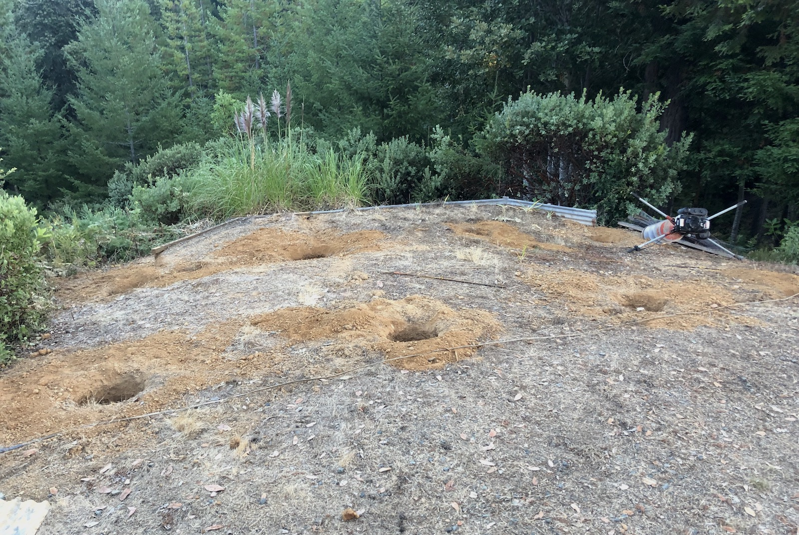
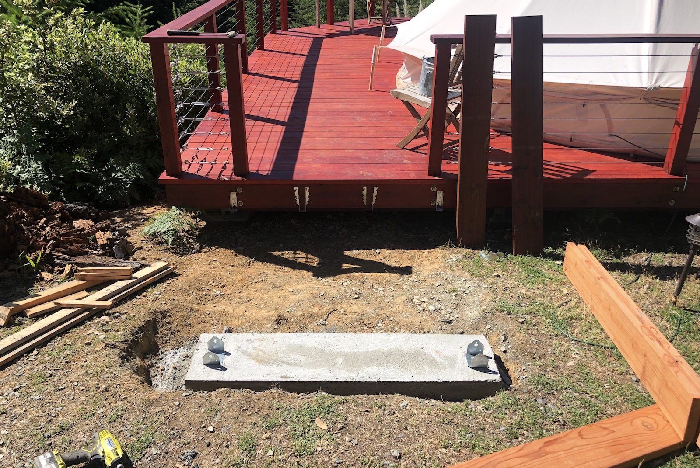

I built a large deck. In many ways this was the most challenging and satisfying thing I've ever made. Over the past few years of building things out of wood, I've gained a great deal of appreciation and awe for the world of construction.
From design and planning to the finishing touches, it was about 6 months of work. I learned a lot and could probably build another in half the time. The total cost of materials was about $7000.
Some photos of the build, with notes to come:
 